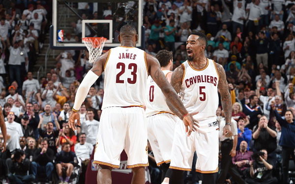
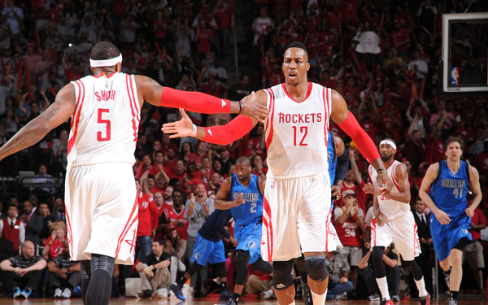

-
Image 1 Test Image 1 Test
-
Image 2 Test Image 2 Test
-

Image 3 Test Image 3 Test
-

Image 4 TestImage 4 TestImage 4 Test
-
Image 5 TestImage 5 TestImage 5 Test
| 排名 | 球队 | 胜 | 负 | 胜率 | 胜差 |
| 1 | 勇士 | 67 | 15 | 81% | 0.0 |
| 2 | 火箭 | 56 | 26 | 68% | 11.0 |
| 3 | 快船 | 56 | 26 | 68% | 11.0 |
| 4 | 开拓者 | 51 | 31 | 62% | 16.0 |
| 5 | 灰熊 | 55 | 27 | 67% | 12.0 |
| 6 | 马刺 | 55 | 27 | 67% | 12.0 |
| 7 | 小牛 | 50 | 32 | 61% | 17.0 |
| 8 | 鹈鹕 | 45 | 37 | 54% | 22.0 |
| 9 | 雷霆 | 45 | 37 | 54% | 22.0 |
| 10 | 太阳 | 39 | 43 | 47% | 28.0 |
| 11 | 爵士 | 38 | 44 | 46% | 29.0 |
| 12 | 掘金 | 30 | 52 | 36% | 37.0 |
| 13 | 国王 | 29 | 53 | 35% | 38.0 |
| 14 | 湖人 | 21 | 61 | 25% | 46.0 |
| 15 | 森林狼 | 16 | 66 | 19% | 51.0 |
| 排名 | 球队 | 胜 | 负 | 胜率 | 胜差 |
| 1 | 老鹰 | 56 | 19 | 74% | 0.0 |
| 2 | 骑士 | 56 | 19 | 74% | 0.0 |
| 3 | 公牛 | 56 | 19 | 74% | 0.0 |
| 4 | 猛龙 | 56 | 19 | 74% | 0.0 |
| 5 | 奇才 | 56 | 19 | 74% | 0.0 |
| 6 | 雄鹿 | 56 | 19 | 74% | 0.0 |
| 7 | 热火 | 56 | 19 | 74% | 0.0 |
| 8 | 篮网 | 56 | 19 | 74% | 0.0 |
| 9 | 凯尔特人 | 56 | 19 | 74% | 0.0 |
| 10 | 步行者 | 56 | 19 | 74% | 0.0 |
| 11 | 老鹰 | 56 | 19 | 74% | 0.0 |
| 12 | 老鹰 | 56 | 19 | 74% | 0.0 |
| 13 | 老鹰 | 56 | 19 | 74% | 0.0 |
| 14 | 76人 | 56 | 19 | 74% | 0.0 |
| 15 | 尼克斯 | 56 | 19 | 74% | 0.0 |
NBA社交媒体